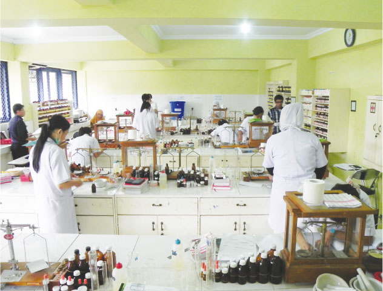
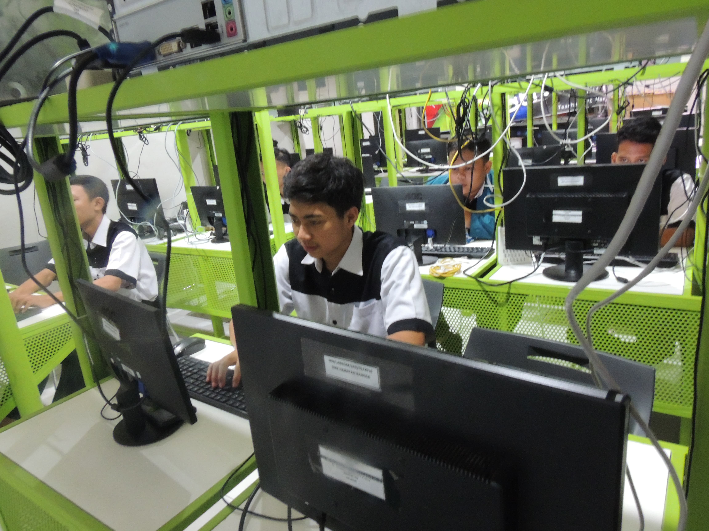
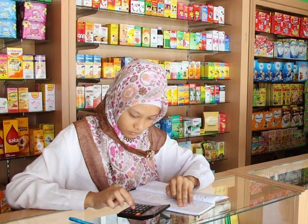

PROFIL SMK HARAPAN BANGSA
SMK Harapan Bangsa didirikan dibawah naungan Yayasan Reste Nur Insani yang merupakan institusi pendidikan formal mempunyai visi misi dan strategi baru dalam proses pembelajaran. Sebagai institusi pendidikan berusaha menyelaraskan kualitas pendidikan dengan kebutuhan dunia kerja dalam pembentukan sumber daya manusia yang unggul.
Dalam era globalisasi yang sudah kita lalui ini, persaingan untuk terjun ke dunia kerja akan semakin keras, maka SMK Harapan Bangsa Depok siap menghantarkan untuk menghadapi persaingan dalam memasuki dunia kerja.
DR. H. Teguh Prajitno, SE, MM
Ketua Yayasan Reste Nur Insani
Visi & Misi
VISI :
1. Menjadi SMK terkemuka dan disegani, dengan tampilan siswa yang disiplin, berbudi pekerti, beriman dan berakhlak mulia.
2. Tidak menciptakan pengangguran baru, dengan lulusan yang punya nilai keunggulan, sehingga mendapat kepercayaan dan citra yang baik.
MISI :
1. Menyediakan fasilitas belajar mengajar yang memadai
2. Menyelenggarakan proses belajar mengajar yang disiplin
3. Melengkapi tenaga guru sesuai proporsi ketentuan kompetensi
4. Menjaga keharmonisan dan kekompakkan antara Yayasan, Guru, Staf dan siswa
5. Mengadakan kegiatan ekstra kurikuler berikut sarana dan prasarana secara memadai
6. Mengembangkan guru dan staff dalam hal keterampilan teknis dan manajemen dan mengedepankan nilai seni tauladan
7. Menjaga situasi yang kondusif untuk menunjang semua aktifitas agar dapat berjalan sesuai dengan harapan stakeholder
Farmasi

Perkembangan bidang Farmasi di Indonesia, menghendaki adanya tenaga tekhnis kefarmasian formal jenjang menengah yang mampu bekerja dalam proses produksi,
distribusi, administrasi, maupun dalam penyuluhan kepada masyarakat dibidang farmasi.
Pengembangan tenaga kesehatan menuju Indonesia sehat 2010 menegaskan bahwa tenaga kesehatan profesional adalah
tenaga kesehatan tingkat menengah yang sudah mempunyai keahlian dibidang kesehatan.
Perkembangan kebijakan pendidikan pemerintah c.q. Departemen Pendidikan Nasional yang mendorong pengembangan SMK,
melalui pembentukan unit – unit SMK baru maupun penambahan siswa SMK.
Farmasi Kesehatan adalah cabang ilmu yang mempelajari tentang pembuatan sediaan farmasi yang baik. Sediaan farmasi dapat berupa obat,
bahan obat, obat tradisional dan lain sebagainya.
Prospek Lulusan Farmasi :
1. Asisten Apoteker pada instalasi Apotek, instansi Rumah Sakit baik pemerintah maupun swasta.
2. Tenaga penyuluhan kesehatan masyarakat di Puskesmas.
3. Tenaga tekhnisi di Industri Obat, Makanan, Minuman, Alat kesehatan dll.
4. Melanjutkan Pendidikan keperguruan Tinggi Negri maupun Swasta.
Teknik Komputer Jaringan

Teknik Komputer Jaringan merupakan jurusan yang mempelajari ilmu berbasis Teknologi Informasi dan Komunikasi terkait kemampuan pemograman komputer, Perakitan komputer,
merancang bangun jaringan dan pengoperasian perangkat lunak.
Jurusan ini sangat diminati oleh siswa sekarang yang dimana mereka harus mengetahui perkembangan teknologi sekarang.
TKJ ini sendiri berdiri untuk menciptakan siswa/siswi yang berkompeten untuk terjun didunia industri.
Teknik Komputer dan Jaringan ini didukung oleh :
1. Guru-guru SMK Harapan Bangsa yang berkompeten.
2. IT Club tkj.harbas
3. Fasilitas yang memadai
Apotik

Apotik adalah suatu tempat dilakukannya pekerjaan kefarmasian, penyaluran
sediaan farmasi, dan perbekalan kesehatan lainnya kepada masyarakat. Pengertian ini
didasarkan pada Keputusan Menteri Kesehatan Republik Indonesia No. 1332/Menkes/SK/X/2002 tentang Perubahan atas Peraturan Menteri Kesehatan RI
No. 922/Menkes/Per/X/1993 tentang Ketentuan dan Tata Cara Pemberian Izin Apotek.